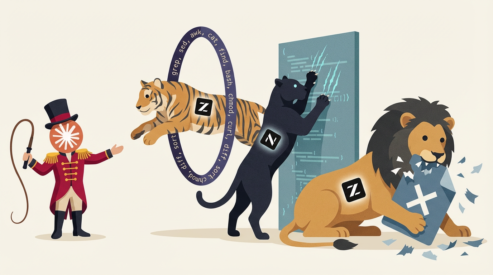

A structured development pipeline for AI-driven projects.
AI agents produce code. PTSD ensures the code was worth producing.
go install github.com/veschin/ptsd/v2/cmd/ptsd@latestGo 1.25+ / single binary / zero dependencies
Most AI-generated code is written before the problem is understood.
- Requirements are defined before code exists
- Each stage produces a concrete, reviewed artifact
- Hooks intercept every file write -- the pipeline is not advisory
- Stages that fail review are blocked from advancing
- The AI follows the process because it cannot do otherwise
The Pipeline
PRD -- Requirements
A section in .ptsd/docs/PRD.md anchored to the feature via <!-- feature:id -->. Acceptance criteria, edge cases, explicit non-goals.
<!-- feature:auth --> ## Authentication Users log in with email and password. Acceptance criteria: - Valid credentials return a JWT token - Invalid credentials return 401 - Locked accounts return 403 with reason Non-goals: social login, 2FA
Seed -- Test Fixtures
Real data in .ptsd/seeds/<id>/. Actual records, not placeholders.
Required only in full profile. Standard and lite skip this stage.
# .ptsd/seeds/auth/users.json [ {"email": "ada@example.com", "status": "active"}, {"email": "locked@test.co", "status": "locked"} ]
BDD -- Behavior Specification
Gherkin scenarios in .ptsd/bdd/<id>.feature. Each maps 1:1 to a PRD acceptance criterion.
Required in full and standard profiles. Lite writes tests directly from PRD.
@feature:auth Feature: Authentication Scenario: Successful login Given user "ada@example.com" is active When valid credentials are submitted Then a JWT token is returned
Tests -- Proof Before Code
Failing tests, one per scenario. Real I/O, no mocks. Mapped via ptsd test map.
// auth_test.go -- written before implementation func TestLogin_ValidCredentials(t *testing.T) { user := seedUser(t, "ada@example.com", "active") token, err := auth.Login(user.Email, user.Password) assert(t, err == nil) assert(t, token != "") }
Implementation
Code that makes failing tests pass. Nothing speculative, nothing extra.
func Login(email, password string) (string, error) { user, err := store.FindByEmail(email) if err != nil { return "", ErrInvalidCredentials } if user.Status == "locked" { return "", ErrLocked } if !verify(password, user.HashedPassword) { return "", ErrInvalidCredentials } return generateJWT(user), nil }
Pipeline Profiles
Not every feature needs every stage. Profiles control which stages are required.
| Profile | Stages | Use case |
|---|---|---|
| full | PRDSeedBDDTestsImpl | Data-heavy features |
| standard | PRDSeedBDDTestsImpl | Default. Most features. |
| lite | PRDSeedBDDTestsImpl | Simple utilities, config |
Enforcement
Four hooks intercept every decision point during an AI session.
Session Start
Pipeline state injected. The AI sees every feature's stage and next action.
$ ptsd context --agent
next: auth stage=prd action=write-seed pipeline=full
next: config stage=prd action=write-tests pipeline=lite
Before Write
Gate check. File belongs to a future stage -- write rejected.
$ ptsd gate-check --file src/auth.go err:pipeline no tests for auth
After Write
Artifact detected. Feature stage advances automatically.
tracked: auth stage=bdd tests=written
On Commit
ptsd validate as pre-commit hook. Pipeline violations block the commit.
err:pipeline auth: review gate not passed for stage tests
Review gate: each stage requires a score of at least 7/10 to advance. Scores below threshold auto-create redo tasks.
Skills
13 instruction sets, one per pipeline action. Each skill is a markdown file placed in the AI tool's discovery path. The AI follows a checklist, not intuition.
Integration
ptsd init detects the AI tool and generates the appropriate configuration.
| Tool | Gate + Track | Skills | Instructions |
|---|---|---|---|
| Claude Code | .claude/hooks/*.sh |
.claude/skills/ |
CLAUDE.md |
| OpenCode | .opencode/plugins/ptsd.ts |
.opencode/commands/ |
AGENTS.md |
| Generic | .git/hooks/ only |
-- | AGENTS.md |
Git hooks (pre-commit, commit-msg) are generated for all tools.
Comparison
| No PTSD | v1.x | v2.0 | |
|---|---|---|---|
| Pipeline | None | 5 stages, mandatory | 3 profiles |
| Enforcement | Hope | Claude Code hooks | Any tool |
| Languages | N/A | Go | 8 languages |
| Context hook | N/A | SessionStart + UserPromptSubmit | SessionStart only |
| Existing projects | N/A | Manual | ptsd adopt |
| Test mapping | N/A | BDD required | BDD or direct |
| Migration | N/A | -- | ptsd migrate |
Benchmark
Does pipeline enforcement improve AI-generated code?
Setup
- Project: Go CLI task manager, 5 features with intentional complexity traps (shared state, cross-cutting concerns, vague requirements)
- Models: Claude Sonnet 4.6 and GLM-5 via GoLeM
- Design: 2×2 within-model — each model is its own control. N=2 per cell, 8 runs total
- PRD: Identical for all runs. Intentionally vague — no exact output strings, no error messages, no date formats
- Evaluation: Blind — directories anonymized (A-H), scored by Opus on 9 criteria (0-3 each, max 27)
Results
| Model | Condition | Score | Tests | Test Files | Commits |
|---|---|---|---|---|---|
| Sonnet | bare | 25.0/27 | 22 | 1 | 0–1 |
| Sonnet | PTSD | 24.5/27 | 26 | 5 | 4–8 |
| GLM-5 | bare | 20.5/27 | 9 | 1 | 1 |
| GLM-5 | PTSD | 20.0/27 | 24 | 5 | 8–13 |
Score — blind evaluation, 9 criteria × 0-3 points each (max 27). See rubric below
Tests — average number of test functions per run
Test Files — bare produces 1 monolithic file; PTSD produces 1 per feature
Commits — bare: single commit or none; PTSD: stage-separated with [SCOPE] format
Scoring Rubric
Each criterion scored 0–3 with anchored definitions. Evaluator does not know which projects used PTSD.
| # | Criterion | 0 | 1 | 2 | 3 |
|---|---|---|---|---|---|
| 1 | Correctness | Doesn't compile | Compiles, tests fail | All tests pass | Tests pass + all spec requirements met |
| 2 | Test quality | No tests | Assert only err==nil |
Assert concrete values, happy path | Happy + error + edge cases |
| 3 | Test isolation | Shared state | Partial isolation | Temp dirs, minor leaks | Full isolation, no mocks |
| 4 | Code structure | One function | Separate functions, one file | Logical separation | Clean packages |
| 5 | Shared storage | Different formats | Inconsistent | Consistent | Designed upfront, coherent |
| 6 | Error paths | No handling | One of two paths | Both present | Both + messages + tested |
| 7 | Cross-cutting | Feature isolated | Stored, not shown | Shown in output | Shown + sorted correctly |
| 8 | Ambiguity resolution | Not implemented | Basic, no edge cases | Core + detection | Core + edges + format decision |
| 9 | Data realism | "foo", "bar", "test" | Mixed | Mostly realistic | All realistic |
What PTSD Actually Builds
Code quality scores are a wash. The difference is in project infrastructure.
After bare run
- Working code
- Passing tests
- Feature registry
- BDD scenarios
- Test-to-feature mapping
- Review history
- Stage-separated commits
After PTSD run
- Working code
- Passing tests
- Feature registry — IDs, status, pipeline stage
- BDD scenarios — Gherkin specs per feature
- Test-to-feature mapping — each test mapped via BDD
- Review history — what was reviewed, when, score
- Stage-separated commits — [SCOPE] format, per-stage
PTSD doesn't make the first implementation better — it makes the project developable. Full methodology and per-run data: FEEDBACK.md
Getting Started
# Install go install github.com/veschin/ptsd/v2/cmd/ptsd@latest # Initialize cd my-project && git init ptsd init # Add features ptsd feature add auth "Authentication" --pipeline full ptsd feature add config "App Config" --pipeline lite ptsd feature status auth in-progress # Pipeline state ptsd context --agent # next: auth stage=prd action=write-seed pipeline=full # next: config stage=prd action=write-tests pipeline=lite